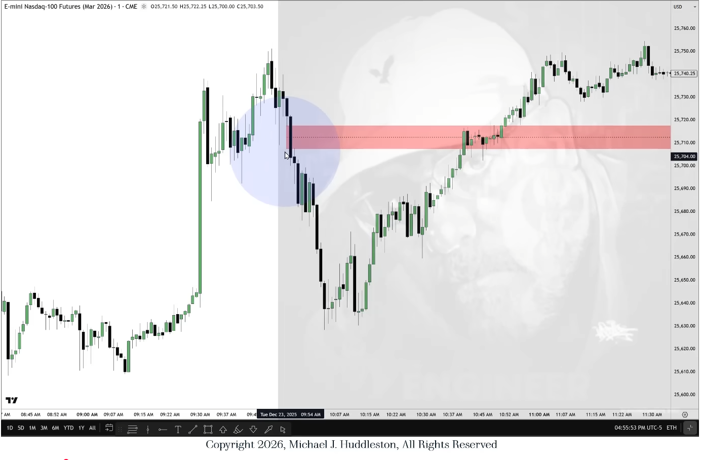

Turtle Soup
Turtle Soup
Fehlausbruch-Setup: Preis nimmt ein altes Low/High (Liquidity/Stop-Hunt) und kehrt sofort in ein FVG/Retracement der Gegenrichtung zurück — enger SL, Target Richtung nächsthöhere PD Array.
Wird v.a. als zweite Entry-Option in Bread & Butter Setups genutzt (Alternative zur direkten Liquiditäts-Sweep-Entry).
Double-Sweep-Variante
Wird ein Short-Term-Low zweimal angelaufen, ohne dass Preis dazwischen weiter steigt, gilt das als Turtle-Soup-Buy-Signal — allerdings nur im Verbund mit passendem Bias und einer Higher-PD als Ziel (nicht isoliert verwenden).

Displacement-Projektion (2026-Ergänzung)
Das erste Displacement nach einem Turtle Soup ist laut 2026er-Content extrem relevant und muss konsequent in die Zukunft ausgemalt werden — es bleibt auch für spätere Price-Runs (reclaimed FVG oder IFVG (Inverse Fair Value Gap)) maßgeblich. Siehe auch Modell 22, das Turtle Soup präziser über einen MSS+SIBI-Trigger definiert.


Verwandt
- Bread & Butter Setups
- Judas Swing — verwandtes Fehlausbruch-Konzept, aber sessionbezogen statt levelbezogen
Was zeigt hierher 34
- Accumulation & Reaccumulation ModelKonzepte
- Bread & Butter Buy Setups (Source)Quellen
- Bread & Butter SetupsModelle
- Double Top & Bottom (Algorithmische Range-Projektion)Konzepte
- Equilibrium Vs. DiscountKonzepte
- Fair Value Gap (FVG)Konzepte
- From Vision To Execution (Source)Quellen
- High Probability Daytrade SetupsModelle
- High Probability Daytrade Setups (Source)Quellen
- ICT 2022 - Episode 03 Market ST + Modell 22 (Source)Quellen
- ICT 2022 - Episode 13 Market Structure for Precision (Source)Quellen
- ICT Macros & Leading CandlesKonzepte
- ICT Mentorship Core Content - Month 02 - Growing Small Accounts (Source)Quellen
- ICT Mentorship Core Content - Month 02 - Market Maker Trap False Breakouts (Source)Quellen
- ICT Mentorship Core Content - Month 02 - Market Maker Trap False Flag (Source)Quellen
- ICT Mentorship Core Content - Month 03 - Market Maker Trap Head Shoulders Pattern (Source)Quellen
- ICT Mentorship Core Content - Month 03 - Timeframe Selection & Defining Setups (Source)Quellen
- ICT Mentorship Core Content - Month 04 - Double Bottom Double Top (Source)Quellen
- ICT Mentorship Core Content - Month 04 - ICT Fair Value Gaps FVG (Source)Quellen
- Katalog (Original)Meta
- Journal-AuswertungSynthese
- Judas SwingKonzepte
- Liquidity VoidKonzepte
- Market Maker Trap - False BreakoutKonzepte
- Market Maker Trap - False FlagKonzepte
- Market Maker Trap - Head & ShouldersKonzepte
- Market Structure Shift (MSS)Konzepte
- Modell 22Konzepte
- Month 08 - Daytrades (Source)Quellen
- Month 9 - Scalping-Daytrades (Source)Quellen
- Quarterly ShiftKonzepte
- Rejection BlockKonzepte
- Smart Money Concepts (SMC)Konzepte
- The ICT Judas Swing (Source)Quellen